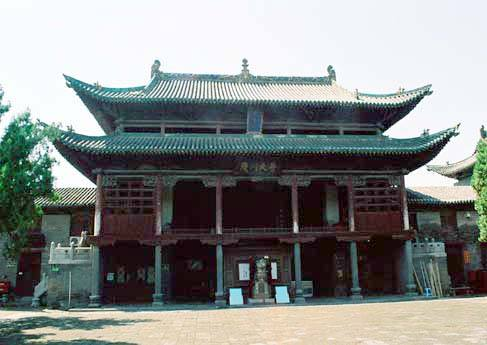
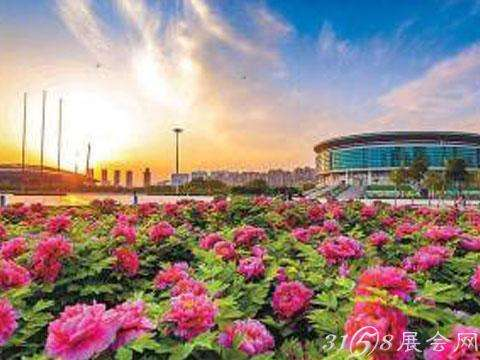
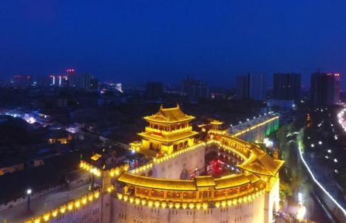

about Luoyang
-

Brief introduction of Luoyang Luoyang, called, , los city, LuoYang, luo jing, jing, etc, in western henan province, the middle and lower reaches of the Yellow River, named after the deep located in the north of luohe , is one of national famous historical and cultural city by the State Council, China's four big ancient capital one of the world cultural city.
-

Peony culture in Luoyang The origin of peony culture is about 3,000 years ago, if peony entered poetry in the Book of Songs. The image of peony has already appeared in Gu Kaizhi's famous painting Luo Shen Fu in the Eastern Jin Dynasty. In the Southern and Northern Dynasties, Yang Zihua painted peony in the Northern Qi Dynasty.
-

History of Luoyang Luoyang, located in the west of Henan Province, is an ancient city with a history of more than 3,000 years. It has been the capital of nine dynasties for 934 years, so it is called "the ancient Capital of Nine Dynasties". One of the six ancient capitals in our country has been around for more than 1600 years.
Tianchi Mountain
White Horse Temple
White Cloud Mountain
chongdugou
Longmen Grottoes
jiguan cave
Longtan Grand Canyon